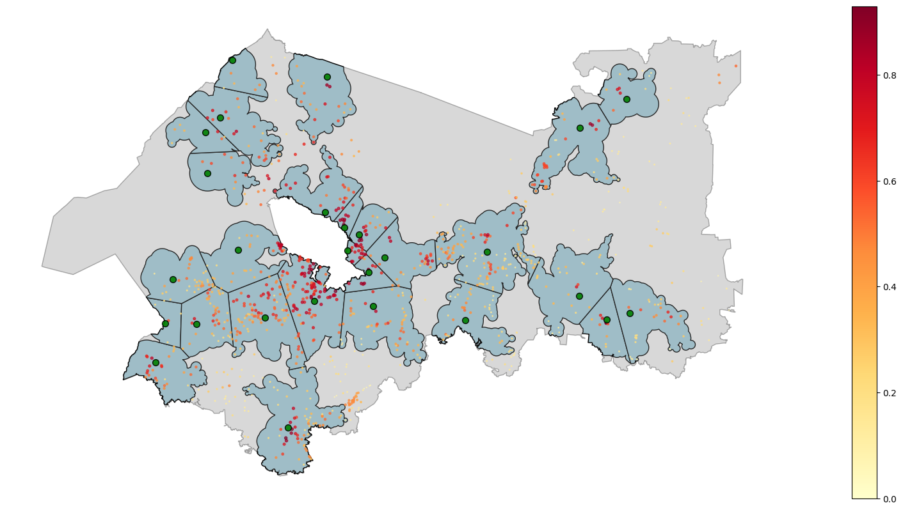

Опорные населенные пункты
[3]:
import warnings
import sys
import os
import requests
import geopandas as gpd
import pandas as pd
from popframe.models.region import Region
from popframe.method.anchor_settlement import AnchorSettlementBuilder
from typing import Dict, List, Optional, Union
import time
warnings.filterwarnings("ignore")
sys.stderr = open(os.devnull, 'w')
Проепроцессинг
Получение территорий
[2]:
def fetch_territories(
url='http://10.32.1.107:5300/api/v1/all_territories',
parent_id=1,
get_all_levels=False,
territory_type_id=None,
name=None,
cities_only=False,
created_at=None,
centers_only=False
):
params = {
'parent_id': parent_id,
'get_all_levels': get_all_levels,
'territory_type_id': territory_type_id,
'name': name,
'cities_only': cities_only,
'created_at': created_at,
'centers_only': centers_only
}
response = requests.get(url, params=params)
if response.status_code == 200:
geojson_data = response.json()
return gpd.GeoDataFrame.from_features(geojson_data['features']).set_crs(epsg=4326)
else:
print(f"Ошибка запроса: {response.status_code}")
return None
Данные по соц категориям
[3]:
BASE_URL = "http://10.32.1.47:5000/api"
CATEGORIES = ['soc_workers', 'soc_old', 'soc_parents']
METRICS = ['dev', 'soc', 'bas']
def get_region_data(territory_id: int) -> Optional[Dict]:
try:
response = requests.get(
f"{BASE_URL}/regions/values_identities",
params={'territory_id': int(territory_id)},
timeout=10
)
if response.status_code == 200:
return response.json()
return None
except (requests.exceptions.RequestException, ValueError):
return None
def fetch_unique_regions_data(territory_ids: List[int]) -> Dict[int, Dict]:
regions_data = {}
for territory_id in territory_ids:
data = get_region_data(territory_id)
regions_data[territory_id] = data
time.sleep(0.1) # Небольшая задержка между запросами
return regions_data
def enrich_geodataframe(
gdf: gpd.GeoDataFrame,
index: Optional[Union[int, List[int]]] = None,
suffix_format: str = '_{index}'
) -> gpd.GeoDataFrame:
# Определяем индексы для обработки
if index is None:
indices = [0, 1, 2]
elif isinstance(index, int):
indices = [index]
else:
indices = index
# Проверяем валидность индексов
if not all(0 <= i <= 2 for i in indices):
raise ValueError("Индексы должны быть в диапазоне [0, 2]")
# Получаем данные для уникальных parent_id
unique_parents = gdf['parent_id'].unique()
regions_data = fetch_unique_regions_data(unique_parents[~pd.isna(unique_parents)])
# Создаем новые колонки для каждой метрики
for category in CATEGORIES:
for metric in METRICS:
for i in indices:
suffix = suffix_format.format(index=i) if len(indices) > 1 else ''
column_name = f"{category}_{metric}{suffix}"
def safe_get_value(parent_id):
if pd.isna(parent_id):
return None
region_data = regions_data.get(parent_id)
if region_data is None:
return None
category_data = region_data.get(category)
if category_data is None:
return None
metric_data = category_data.get(metric)
if metric_data is None or i >= len(metric_data):
return None
return metric_data[i]
gdf[column_name] = gdf['parent_id'].apply(safe_get_value)
return gdf
def enrich_with_region_data(
gdf: gpd.GeoDataFrame,
index: Optional[Union[int, List[int]]] = None,
suffix_format: str = '_{index}'
) -> gpd.GeoDataFrame:
enriched_gdf = enrich_geodataframe(gdf, index, suffix_format)
return enriched_gdf
Функция поиска родительской территории по типу
[4]:
# Глобальный словарь для хранения информации о территориях
territory_dict = {}
def initialize_territory_dict(gdf: gpd.GeoDataFrame):
global territory_dict
territory_dict = {
row['id']: {
'level': row['level'],
'parent_id': row['parent']['id'] if pd.notna(row['parent']) else None,
'name': row['name'] # Добавляем name в словарь
}
for _, row in gdf.iterrows()
}
def find_parent_info(id: int, target_type_id: int) -> tuple:
if id not in territory_dict:
return None, None
current = territory_dict[id]
if not current['parent_id']:
return None, None
parent = territory_dict.get(current['parent_id'])
if parent and parent['level'] == target_type_id:
return current['parent_id'], parent['name']
return find_parent_info(current['parent_id'], target_type_id)
def find_parent_ids(target_gdf: gpd.GeoDataFrame,
reference_gdf: gpd.GeoDataFrame,
target_type_id: int) -> gpd.GeoDataFrame:
# Инициализируем словарь территорий на основе reference_gdf
initialize_territory_dict(reference_gdf)
# Применяем функцию поиска parent_id и name для каждой территории в target_gdf
parent_info = target_gdf['id'].apply(
lambda x: find_parent_info(x, target_type_id)
)
# Разделяем результаты на два столбца
target_gdf['parent_id'] = [info[0] if info else None for info in parent_info]
target_gdf['parent_name'] = [info[1] if info else None for info in parent_info]
return target_gdf
Получение данных из TownsNet
[5]:
API_URL = "http://10.32.1.102:5510/provision/{region_id}/get_evaluation"
CATEGORIES_PROV = ["Базовая", "Дополнительная", "Комфорт"]
CATEGORIES_COLUMNS = ['basic', 'additional', 'comfort']
def fetch_gdf(region_id: int, category_name: str, category_column: str):
params = {"category": category_name}
response = requests.get(API_URL.format(region_id=region_id), params=params)
if response.status_code == 200:
data = response.json()
gdf = gpd.GeoDataFrame.from_features(data["features"])
gdf = gdf[["geometry", category_column]]
return gdf
else:
raise Exception(f"API request failed with status {response.status_code}")
def fetch_all_categories(region_id: int):
gdfs = [fetch_gdf(region_id, name, category_column) for name, category_column in zip(CATEGORIES_PROV,CATEGORIES_COLUMNS)]
combined_gdf = gdfs[0]
for gdf, category in zip(gdfs[1:], CATEGORIES_COLUMNS[1:]):
combined_gdf = combined_gdf.merge(gdf[["geometry", category]], on="geometry", how="outer")
return combined_gdf
[6]:
def get_population(territories_gdf: gpd.GeoDataFrame):
POPULATION_COUNT_INDICATOR_ID =1
URBAN_API = 'http://10.32.1.107:5300'
res = requests.get(f'{URBAN_API}/api/v1/indicator/{POPULATION_COUNT_INDICATOR_ID}/values', verify=False)
res.raise_for_status()
res_df = pd.DataFrame(res.json())
res_df['territory_id'] = res_df['territory'].apply(lambda x: x['id'] if isinstance(x, dict) else None)
res_df = res_df[res_df['territory_id'].isin(territories_gdf['id'].values)]
res_df = (
res_df
.groupby('territory_id')
.agg({'value': 'last'})
.rename(columns={'value': 'population'})
)
territories_gdf = territories_gdf.merge(res_df, left_on='id', right_on='territory_id', how='left')
territories_gdf['population'] = territories_gdf['population'].fillna(0) # Заменяем NaN на 0
return territories_gdf
Получаем данные по городам и ГПСП
[7]:
all_territories = fetch_territories(parent_id=1, get_all_levels=True, cities_only=False, centers_only=True)
all_territories = all_territories.reset_index().rename(columns={'territory_id': 'id'})
all_territories
[7]:
| index | geometry | id | territory_type | parent | name | level | properties | admin_center | target_city_type | okato_code | oktmo_code | is_city | created_at | updated_at | |
|---|---|---|---|---|---|---|---|---|---|---|---|---|---|---|---|
| 0 | 0 | POINT (34.61597 59.54053) | 2 | {'id': 2, 'name': 'Муниципальное образование'} | {'id': 1, 'name': 'Ленинградская область'} | Бокситогорский муниципальный район | 3 | {'Малые города': 2, 'Крупные города': 0, 'Числ... | {'id': 328, 'name': 'город Бокситогорск'} | None | 41203000000 | 41603000 | False | 2024-06-16T21:35:40.801621Z | 2024-11-14T12:17:18.795643Z |
| 1 | 1 | POINT (34.28178 59.4324) | 3 | {'id': 3, 'name': 'Поселение'} | {'id': 2, 'name': 'Бокситогорский муниципальны... | Самойловское сельское поселение | 4 | {'Численность населения': 2154, 'Административ... | {'id': 310, 'name': 'поселок Совхозный'} | None | 41203876000 | 41603476 | False | 2024-06-16T21:35:40.801621Z | 2024-11-14T12:17:52.703740Z |
| 2 | 2 | POINT (33.95669 59.66792) | 4 | {'id': 3, 'name': 'Поселение'} | {'id': 2, 'name': 'Бокситогорский муниципальны... | Большедворское сельское поселение | 4 | {'Численность населения': 1698, 'Административ... | {'id': 427, 'name': 'деревня Большой Двор'} | None | 41203812000 | 41603412 | False | 2024-06-16T21:35:40.801621Z | 2024-11-14T12:17:34.396287Z |
| 3 | 3 | POINT (34.14548 59.52005) | 5 | {'id': 3, 'name': 'Поселение'} | {'id': 2, 'name': 'Бокситогорский муниципальны... | Пикалевское городское поселение | 4 | {'Численность населения': 20169, 'Администрати... | {'id': 335, 'name': 'город Пикалево'} | None | 41440000000 | 41603102 | False | 2024-06-16T21:35:40.801621Z | 2024-11-14T12:17:34.930089Z |
| 4 | 4 | POINT (33.85846 59.34944) | 6 | {'id': 3, 'name': 'Поселение'} | {'id': 2, 'name': 'Бокситогорский муниципальны... | Борское сельское поселение | 4 | {'Численность населения': 3393, 'Административ... | {'id': 2859, 'name': 'деревня Бор'} | None | 41203816000 | 41603416 | False | 2024-06-16T21:35:40.801621Z | 2024-11-14T12:17:35.367513Z |
| ... | ... | ... | ... | ... | ... | ... | ... | ... | ... | ... | ... | ... | ... | ... | ... |
| 3131 | 3131 | POINT (31.2342 59.17022) | 3133 | {'id': 18, 'name': 'Населенный пункт'} | {'id': 205, 'name': 'Трубникоборское сельское ... | деревня Апраксин Бор | 5 | {} | None | None | 41248844010 | 41648444111 | True | 2024-06-16T21:35:40.801621Z | 2025-05-22T21:46:24.081332Z |
| 3132 | 3132 | POINT (31.32183 59.18624) | 3134 | {'id': 18, 'name': 'Населенный пункт'} | {'id': 205, 'name': 'Трубникоборское сельское ... | деревня Александровка | 5 | {} | None | None | 41248844002 | 41648444106 | True | 2024-06-16T21:35:40.801621Z | 2025-05-22T11:14:58.578700Z |
| 3133 | 3133 | POINT (31.48353 59.28739) | 3135 | {'id': 18, 'name': 'Населенный пункт'} | {'id': 205, 'name': 'Трубникоборское сельское ... | деревня Большая Горка | 5 | {} | None | None | 41248860002 | 41648444131 | True | 2024-06-16T21:35:40.801621Z | 2025-05-22T21:46:27.219027Z |
| 3134 | 3134 | POINT (31.45352 59.30929) | 3136 | {'id': 18, 'name': 'Населенный пункт'} | {'id': 205, 'name': 'Трубникоборское сельское ... | деревня Дроздово | 5 | {} | None | None | 41248860003 | 41648444146 | True | 2024-06-16T21:35:40.801621Z | 2025-05-22T21:46:27.140158Z |
| 3135 | 3135 | POINT (31.4571 59.30223) | 3137 | {'id': 18, 'name': 'Населенный пункт'} | {'id': 205, 'name': 'Трубникоборское сельское ... | деревня Большая Кунесть | 5 | {} | None | None | 41248860009 | 41648444136 | True | 2024-06-16T21:35:40.801621Z | 2025-05-22T11:29:40.547203Z |
3136 rows × 15 columns
[8]:
# all_territories.to_parquet('data/all_territories.parquet')
# all_territories = gpd.read_parquet('data/all_territories.parquet')
Данные сохранены в файлы, при необходимиости можно раскомментировать код и получить обновленные данные
[9]:
# Получение данных о городах
towns_gdf = fetch_territories(parent_id=1, get_all_levels=True, cities_only=True, centers_only=True)
towns_gdf
[9]:
| geometry | territory_id | territory_type | parent | name | level | properties | admin_center | target_city_type | okato_code | oktmo_code | is_city | created_at | updated_at | |
|---|---|---|---|---|---|---|---|---|---|---|---|---|---|---|
| 0 | POINT (33.74561 59.36031) | 207 | {'id': 18, 'name': 'Населенный пункт'} | {'id': 6, 'name': 'Борское сельское поселение'} | деревня Болото | 5 | {} | None | None | 41203816004 | 41603416106 | True | 2024-06-16T21:35:40.801621Z | 2025-05-22T21:46:49.047689Z |
| 1 | POINT (33.78685 59.47791) | 208 | {'id': 18, 'name': 'Населенный пункт'} | {'id': 6, 'name': 'Борское сельское поселение'} | деревня Большой Остров | 5 | {} | None | None | 41203816020 | 41603416111 | True | 2024-06-16T21:35:40.801621Z | 2025-05-22T21:46:50.317027Z |
| 2 | POINT (33.79438 59.47479) | 209 | {'id': 18, 'name': 'Населенный пункт'} | {'id': 6, 'name': 'Борское сельское поселение'} | деревня Бор | 5 | {} | None | None | 41203816001 | 41603416101 | True | 2024-06-16T21:35:40.801621Z | 2025-05-22T11:08:10.553286Z |
| 3 | POINT (33.77497 59.44313) | 210 | {'id': 18, 'name': 'Населенный пункт'} | {'id': 6, 'name': 'Борское сельское поселение'} | деревня Бороватое | 5 | {} | None | None | 41203816005 | 41603416116 | True | 2024-06-16T21:35:40.801621Z | 2025-05-22T21:46:50.270215Z |
| 4 | POINT (33.67886 59.33333) | 211 | {'id': 18, 'name': 'Населенный пункт'} | {'id': 6, 'name': 'Борское сельское поселение'} | деревня Бочево | 5 | {} | None | None | 41203816003 | 41603416121 | True | 2024-06-16T21:35:40.801621Z | 2025-05-22T10:15:56.823065Z |
| ... | ... | ... | ... | ... | ... | ... | ... | ... | ... | ... | ... | ... | ... | ... |
| 2926 | POINT (31.2342 59.17022) | 3133 | {'id': 18, 'name': 'Населенный пункт'} | {'id': 205, 'name': 'Трубникоборское сельское ... | деревня Апраксин Бор | 5 | {} | None | None | 41248844010 | 41648444111 | True | 2024-06-16T21:35:40.801621Z | 2025-05-22T21:46:24.081332Z |
| 2927 | POINT (31.32183 59.18624) | 3134 | {'id': 18, 'name': 'Населенный пункт'} | {'id': 205, 'name': 'Трубникоборское сельское ... | деревня Александровка | 5 | {} | None | None | 41248844002 | 41648444106 | True | 2024-06-16T21:35:40.801621Z | 2025-05-22T11:14:58.578700Z |
| 2928 | POINT (31.48353 59.28739) | 3135 | {'id': 18, 'name': 'Населенный пункт'} | {'id': 205, 'name': 'Трубникоборское сельское ... | деревня Большая Горка | 5 | {} | None | None | 41248860002 | 41648444131 | True | 2024-06-16T21:35:40.801621Z | 2025-05-22T21:46:27.219027Z |
| 2929 | POINT (31.45352 59.30929) | 3136 | {'id': 18, 'name': 'Населенный пункт'} | {'id': 205, 'name': 'Трубникоборское сельское ... | деревня Дроздово | 5 | {} | None | None | 41248860003 | 41648444146 | True | 2024-06-16T21:35:40.801621Z | 2025-05-22T21:46:27.140158Z |
| 2930 | POINT (31.4571 59.30223) | 3137 | {'id': 18, 'name': 'Населенный пункт'} | {'id': 205, 'name': 'Трубникоборское сельское ... | деревня Большая Кунесть | 5 | {} | None | None | 41248860009 | 41648444136 | True | 2024-06-16T21:35:40.801621Z | 2025-05-22T11:29:40.547203Z |
2931 rows × 14 columns
[10]:
towns_gdf['is_anchor_settlement'] = towns_gdf['target_city_type'].apply(lambda x: x is not None and 'id' in x)
towns_gdf["is_anchor_settlement"] = towns_gdf["is_anchor_settlement"].astype(bool)
towns_gdf = towns_gdf[['geometry', 'territory_id', 'name', 'is_anchor_settlement']]
towns_gdf = towns_gdf.reset_index().rename(columns={'territory_id': 'id'})
towns_gdf
[10]:
| index | geometry | id | name | is_anchor_settlement | |
|---|---|---|---|---|---|
| 0 | 0 | POINT (33.74561 59.36031) | 207 | деревня Болото | False |
| 1 | 1 | POINT (33.78685 59.47791) | 208 | деревня Большой Остров | False |
| 2 | 2 | POINT (33.79438 59.47479) | 209 | деревня Бор | False |
| 3 | 3 | POINT (33.77497 59.44313) | 210 | деревня Бороватое | False |
| 4 | 4 | POINT (33.67886 59.33333) | 211 | деревня Бочево | False |
| ... | ... | ... | ... | ... | ... |
| 2926 | 2926 | POINT (31.2342 59.17022) | 3133 | деревня Апраксин Бор | False |
| 2927 | 2927 | POINT (31.32183 59.18624) | 3134 | деревня Александровка | False |
| 2928 | 2928 | POINT (31.48353 59.28739) | 3135 | деревня Большая Горка | False |
| 2929 | 2929 | POINT (31.45352 59.30929) | 3136 | деревня Дроздово | False |
| 2930 | 2930 | POINT (31.4571 59.30223) | 3137 | деревня Большая Кунесть | False |
2931 rows × 5 columns
[11]:
towns_gdf = find_parent_ids(towns_gdf, all_territories, target_type_id=4)
towns_gdf
[11]:
| index | geometry | id | name | is_anchor_settlement | parent_id | parent_name | |
|---|---|---|---|---|---|---|---|
| 0 | 0 | POINT (33.74561 59.36031) | 207 | деревня Болото | False | 6.0 | Борское сельское поселение |
| 1 | 1 | POINT (33.78685 59.47791) | 208 | деревня Большой Остров | False | 6.0 | Борское сельское поселение |
| 2 | 2 | POINT (33.79438 59.47479) | 209 | деревня Бор | False | 6.0 | Борское сельское поселение |
| 3 | 3 | POINT (33.77497 59.44313) | 210 | деревня Бороватое | False | 6.0 | Борское сельское поселение |
| 4 | 4 | POINT (33.67886 59.33333) | 211 | деревня Бочево | False | 6.0 | Борское сельское поселение |
| ... | ... | ... | ... | ... | ... | ... | ... |
| 2926 | 2926 | POINT (31.2342 59.17022) | 3133 | деревня Апраксин Бор | False | 205.0 | Трубникоборское сельское поселение |
| 2927 | 2927 | POINT (31.32183 59.18624) | 3134 | деревня Александровка | False | 205.0 | Трубникоборское сельское поселение |
| 2928 | 2928 | POINT (31.48353 59.28739) | 3135 | деревня Большая Горка | False | 205.0 | Трубникоборское сельское поселение |
| 2929 | 2929 | POINT (31.45352 59.30929) | 3136 | деревня Дроздово | False | 205.0 | Трубникоборское сельское поселение |
| 2930 | 2930 | POINT (31.4571 59.30223) | 3137 | деревня Большая Кунесть | False | 205.0 | Трубникоборское сельское поселение |
2931 rows × 7 columns
[13]:
towns_gdf = enrich_with_region_data(towns_gdf, index=0)
towns_gdf
[13]:
| index | geometry | id | name | is_anchor_settlement | parent_id | parent_name | population | soc_workers_dev | soc_workers_soc | soc_workers_bas | soc_old_dev | soc_old_soc | soc_old_bas | soc_parents_dev | soc_parents_soc | soc_parents_bas | |
|---|---|---|---|---|---|---|---|---|---|---|---|---|---|---|---|---|---|
| 0 | 0 | POINT (33.74561 59.36031) | 207 | деревня Болото | False | 6.0 | Борское сельское поселение | 10.0 | None | 0.033795 | 0.096542 | 0.194644 | 0.041469 | 0.072120 | 0.308008 | 0.033795 | 0.002834 |
| 1 | 1 | POINT (33.78685 59.47791) | 208 | деревня Большой Остров | False | 6.0 | Борское сельское поселение | 68.0 | None | 0.033795 | 0.096542 | 0.194644 | 0.041469 | 0.072120 | 0.308008 | 0.033795 | 0.002834 |
| 2 | 2 | POINT (33.79438 59.47479) | 209 | деревня Бор | False | 6.0 | Борское сельское поселение | 1734.0 | None | 0.033795 | 0.096542 | 0.194644 | 0.041469 | 0.072120 | 0.308008 | 0.033795 | 0.002834 |
| 3 | 3 | POINT (33.77497 59.44313) | 210 | деревня Бороватое | False | 6.0 | Борское сельское поселение | 10.0 | None | 0.033795 | 0.096542 | 0.194644 | 0.041469 | 0.072120 | 0.308008 | 0.033795 | 0.002834 |
| 4 | 4 | POINT (33.67886 59.33333) | 211 | деревня Бочево | False | 6.0 | Борское сельское поселение | 10.0 | None | 0.033795 | 0.096542 | 0.194644 | 0.041469 | 0.072120 | 0.308008 | 0.033795 | 0.002834 |
| ... | ... | ... | ... | ... | ... | ... | ... | ... | ... | ... | ... | ... | ... | ... | ... | ... | ... |
| 2926 | 2926 | POINT (31.2342 59.17022) | 3133 | деревня Апраксин Бор | False | 205.0 | Трубникоборское сельское поселение | 313.0 | None | 0.152398 | 0.520615 | 0.271781 | 0.105424 | 0.491682 | 0.335392 | 0.152398 | 0.226743 |
| 2927 | 2927 | POINT (31.32183 59.18624) | 3134 | деревня Александровка | False | 205.0 | Трубникоборское сельское поселение | 313.0 | None | 0.152398 | 0.520615 | 0.271781 | 0.105424 | 0.491682 | 0.335392 | 0.152398 | 0.226743 |
| 2928 | 2928 | POINT (31.48353 59.28739) | 3135 | деревня Большая Горка | False | 205.0 | Трубникоборское сельское поселение | 313.0 | None | 0.152398 | 0.520615 | 0.271781 | 0.105424 | 0.491682 | 0.335392 | 0.152398 | 0.226743 |
| 2929 | 2929 | POINT (31.45352 59.30929) | 3136 | деревня Дроздово | False | 205.0 | Трубникоборское сельское поселение | 5.0 | None | 0.152398 | 0.520615 | 0.271781 | 0.105424 | 0.491682 | 0.335392 | 0.152398 | 0.226743 |
| 2930 | 2930 | POINT (31.4571 59.30223) | 3137 | деревня Большая Кунесть | False | 205.0 | Трубникоборское сельское поселение | 5.0 | None | 0.152398 | 0.520615 | 0.271781 | 0.105424 | 0.491682 | 0.335392 | 0.152398 | 0.226743 |
2931 rows × 17 columns
[14]:
provision_gdf = fetch_all_categories(1)
provision_gdf = provision_gdf.set_crs(epsg=4326)
# Добавляем буфер вокруг точек в gdf1
orig_geometry = towns_gdf['geometry']
towns_gdf['geometry'] = towns_gdf.geometry.buffer(0.002)
towns_gdf = towns_gdf.sjoin(provision_gdf, how='left', predicate='intersects')
towns_gdf['geometry'] = orig_geometry
towns_gdf['provision'] = towns_gdf[['basic', 'additional', 'comfort']].mean(axis=1)
# towns_gdf.to_parquet('data/towns_gdf.parquet')
towns_gdf
[14]:
| index | geometry | id | name | is_anchor_settlement | parent_id | parent_name | population | soc_workers_dev | soc_workers_soc | ... | soc_old_soc | soc_old_bas | soc_parents_dev | soc_parents_soc | soc_parents_bas | index_right | basic | additional | comfort | provision | |
|---|---|---|---|---|---|---|---|---|---|---|---|---|---|---|---|---|---|---|---|---|---|
| 0 | 0 | POINT (33.74561 59.36031) | 207 | деревня Болото | False | 6.0 | Борское сельское поселение | 10.0 | None | 0.033795 | ... | 0.041469 | 0.072120 | 0.308008 | 0.033795 | 0.002834 | NaN | NaN | NaN | NaN | NaN |
| 1 | 1 | POINT (33.78685 59.47791) | 208 | деревня Большой Остров | False | 6.0 | Борское сельское поселение | 68.0 | None | 0.033795 | ... | 0.041469 | 0.072120 | 0.308008 | 0.033795 | 0.002834 | NaN | NaN | NaN | NaN | NaN |
| 2 | 2 | POINT (33.79438 59.47479) | 209 | деревня Бор | False | 6.0 | Борское сельское поселение | 1734.0 | None | 0.033795 | ... | 0.041469 | 0.072120 | 0.308008 | 0.033795 | 0.002834 | NaN | NaN | NaN | NaN | NaN |
| 3 | 3 | POINT (33.77497 59.44313) | 210 | деревня Бороватое | False | 6.0 | Борское сельское поселение | 10.0 | None | 0.033795 | ... | 0.041469 | 0.072120 | 0.308008 | 0.033795 | 0.002834 | 3.0 | 0.53 | 0.7 | 0.4 | 0.543333 |
| 4 | 4 | POINT (33.67886 59.33333) | 211 | деревня Бочево | False | 6.0 | Борское сельское поселение | 10.0 | None | 0.033795 | ... | 0.041469 | 0.072120 | 0.308008 | 0.033795 | 0.002834 | NaN | NaN | NaN | NaN | NaN |
| ... | ... | ... | ... | ... | ... | ... | ... | ... | ... | ... | ... | ... | ... | ... | ... | ... | ... | ... | ... | ... | ... |
| 2926 | 2926 | POINT (31.2342 59.17022) | 3133 | деревня Апраксин Бор | False | 205.0 | Трубникоборское сельское поселение | 313.0 | None | 0.152398 | ... | 0.105424 | 0.491682 | 0.335392 | 0.152398 | 0.226743 | 2926.0 | 0.20 | 0.4 | 0.2 | 0.266667 |
| 2927 | 2927 | POINT (31.32183 59.18624) | 3134 | деревня Александровка | False | 205.0 | Трубникоборское сельское поселение | 313.0 | None | 0.152398 | ... | 0.105424 | 0.491682 | 0.335392 | 0.152398 | 0.226743 | NaN | NaN | NaN | NaN | NaN |
| 2928 | 2928 | POINT (31.48353 59.28739) | 3135 | деревня Большая Горка | False | 205.0 | Трубникоборское сельское поселение | 313.0 | None | 0.152398 | ... | 0.105424 | 0.491682 | 0.335392 | 0.152398 | 0.226743 | NaN | NaN | NaN | NaN | NaN |
| 2929 | 2929 | POINT (31.45352 59.30929) | 3136 | деревня Дроздово | False | 205.0 | Трубникоборское сельское поселение | 5.0 | None | 0.152398 | ... | 0.105424 | 0.491682 | 0.335392 | 0.152398 | 0.226743 | NaN | NaN | NaN | NaN | NaN |
| 2930 | 2930 | POINT (31.4571 59.30223) | 3137 | деревня Большая Кунесть | False | 205.0 | Трубникоборское сельское поселение | 5.0 | None | 0.152398 | ... | 0.105424 | 0.491682 | 0.335392 | 0.152398 | 0.226743 | 2930.0 | 0.33 | 0.4 | 0.4 | 0.376667 |
2932 rows × 22 columns
[15]:
# towns_gdf = gpd.read_parquet('data/cities_gdf.parquet')
# towns_gdf['provision'] = towns_gdf[['basic', 'additional', 'comfort']].mean(axis=1)
towns_gdf = towns_gdf.set_index("id", drop=False)
towns_gdf = towns_gdf.fillna(0)
towns_gdf = towns_gdf.to_crs(4326)
towns_gdf['parent_name'] = towns_gdf['parent_name'].fillna('').astype(str)
# теперь можно безопасно сохранить в parquet
towns_gdf.to_parquet('data/towns_gdf.parquet')
towns_gdf
[15]:
| index | geometry | id | name | is_anchor_settlement | parent_id | parent_name | population | soc_workers_dev | soc_workers_soc | ... | soc_old_soc | soc_old_bas | soc_parents_dev | soc_parents_soc | soc_parents_bas | index_right | basic | additional | comfort | provision | |
|---|---|---|---|---|---|---|---|---|---|---|---|---|---|---|---|---|---|---|---|---|---|
| id | |||||||||||||||||||||
| 207 | 0 | POINT (33.74561 59.36031) | 207 | деревня Болото | False | 6.0 | Борское сельское поселение | 10.0 | 0 | 0.033795 | ... | 0.041469 | 0.072120 | 0.308008 | 0.033795 | 0.002834 | 0.0 | 0.00 | 0.0 | 0.0 | 0.000000 |
| 208 | 1 | POINT (33.78685 59.47791) | 208 | деревня Большой Остров | False | 6.0 | Борское сельское поселение | 68.0 | 0 | 0.033795 | ... | 0.041469 | 0.072120 | 0.308008 | 0.033795 | 0.002834 | 0.0 | 0.00 | 0.0 | 0.0 | 0.000000 |
| 209 | 2 | POINT (33.79438 59.47479) | 209 | деревня Бор | False | 6.0 | Борское сельское поселение | 1734.0 | 0 | 0.033795 | ... | 0.041469 | 0.072120 | 0.308008 | 0.033795 | 0.002834 | 0.0 | 0.00 | 0.0 | 0.0 | 0.000000 |
| 210 | 3 | POINT (33.77497 59.44313) | 210 | деревня Бороватое | False | 6.0 | Борское сельское поселение | 10.0 | 0 | 0.033795 | ... | 0.041469 | 0.072120 | 0.308008 | 0.033795 | 0.002834 | 3.0 | 0.53 | 0.7 | 0.4 | 0.543333 |
| 211 | 4 | POINT (33.67886 59.33333) | 211 | деревня Бочево | False | 6.0 | Борское сельское поселение | 10.0 | 0 | 0.033795 | ... | 0.041469 | 0.072120 | 0.308008 | 0.033795 | 0.002834 | 0.0 | 0.00 | 0.0 | 0.0 | 0.000000 |
| ... | ... | ... | ... | ... | ... | ... | ... | ... | ... | ... | ... | ... | ... | ... | ... | ... | ... | ... | ... | ... | ... |
| 3133 | 2926 | POINT (31.2342 59.17022) | 3133 | деревня Апраксин Бор | False | 205.0 | Трубникоборское сельское поселение | 313.0 | 0 | 0.152398 | ... | 0.105424 | 0.491682 | 0.335392 | 0.152398 | 0.226743 | 2926.0 | 0.20 | 0.4 | 0.2 | 0.266667 |
| 3134 | 2927 | POINT (31.32183 59.18624) | 3134 | деревня Александровка | False | 205.0 | Трубникоборское сельское поселение | 313.0 | 0 | 0.152398 | ... | 0.105424 | 0.491682 | 0.335392 | 0.152398 | 0.226743 | 0.0 | 0.00 | 0.0 | 0.0 | 0.000000 |
| 3135 | 2928 | POINT (31.48353 59.28739) | 3135 | деревня Большая Горка | False | 205.0 | Трубникоборское сельское поселение | 313.0 | 0 | 0.152398 | ... | 0.105424 | 0.491682 | 0.335392 | 0.152398 | 0.226743 | 0.0 | 0.00 | 0.0 | 0.0 | 0.000000 |
| 3136 | 2929 | POINT (31.45352 59.30929) | 3136 | деревня Дроздово | False | 205.0 | Трубникоборское сельское поселение | 5.0 | 0 | 0.152398 | ... | 0.105424 | 0.491682 | 0.335392 | 0.152398 | 0.226743 | 0.0 | 0.00 | 0.0 | 0.0 | 0.000000 |
| 3137 | 2930 | POINT (31.4571 59.30223) | 3137 | деревня Большая Кунесть | False | 205.0 | Трубникоборское сельское поселение | 5.0 | 0 | 0.152398 | ... | 0.105424 | 0.491682 | 0.335392 | 0.152398 | 0.226743 | 2930.0 | 0.33 | 0.4 | 0.4 | 0.376667 |
2932 rows × 22 columns
Работа метода
Границы опорных пунктов
[4]:
from popframe.models.region import Region
from popframe.method.anchor_settlement import AnchorSettlementBuilder
# Создаем экземпляр класса
region_model = Region.from_pickle('data/1.pickle')
builder = AnchorSettlementBuilder(region=region_model)
# Вызываем метод построения границ
towns_gdf = gpd.read_parquet('data/towns_gdf.parquet')
settlement_boundaries = builder.get_anchor_settlement_boundaries(towns_gdf, time = 50)
[ ]:
# settlement_boundaries.to_file('data/settlement_boundaries.geojson', driver='GeoJSON')
[5]:
import matplotlib.pyplot as plt
import geopandas as gpd
# Создание графика и оси
fig, ax = plt.subplots(figsize=(30, 10))
# Визуализация границ с заливкой светло-голубым цветом
settlement_boundaries.plot(ax=ax, edgecolor="black", facecolor="#ADD8E6", linewidth=1)
# Визуализация границ региона (серым цветом с прозрачностью)
region_boundary = region_model.region
region_boundary.plot(ax=ax, color='gray', edgecolor='black', alpha=0.3)
local_crs = region_boundary.crs
non_anchor_towns = towns_gdf[towns_gdf["is_anchor_settlement"] == False] # Не опорные города
anchor_towns = towns_gdf[towns_gdf["is_anchor_settlement"] == True] # Не опорные города
non_anchor_towns = non_anchor_towns.to_crs(local_crs)
anchor_towns = anchor_towns.to_crs(local_crs)
# Визуализация не опорных городов (тепловая карта по provision)
non_anchor_towns.plot(
ax=ax,
column="basic", # Градиент по 'provision'
cmap="YlOrRd", # От жёлтого к красному
legend=True, # Включаем легенду
markersize=non_anchor_towns["basic"] * 10, # Размер точек по значению
alpha=0.7
)
# Визуализация опорных городов (зелёным цветом)
anchor_towns.plot(
ax=ax,
color="green", # Фиксированный зелёный цвет
markersize=50, # Размер маркеров
alpha=0.9,
edgecolor="black"
)
# Настройки отображения
ax.set_axis_off()
# Показ графика
plt.show()
